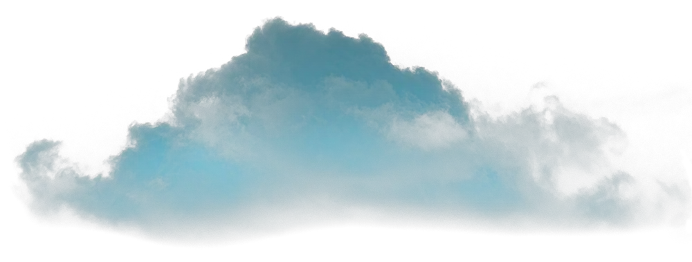
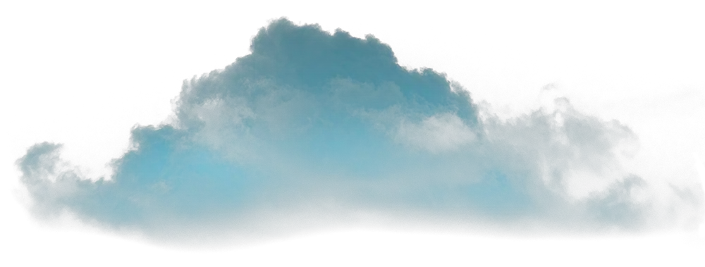
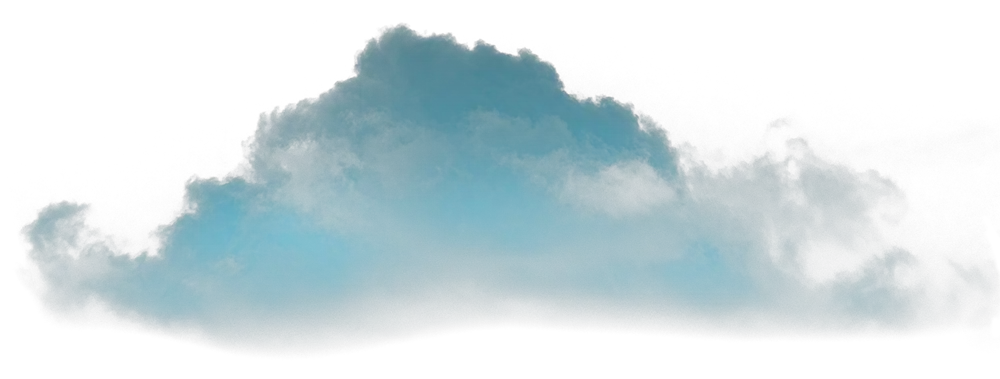
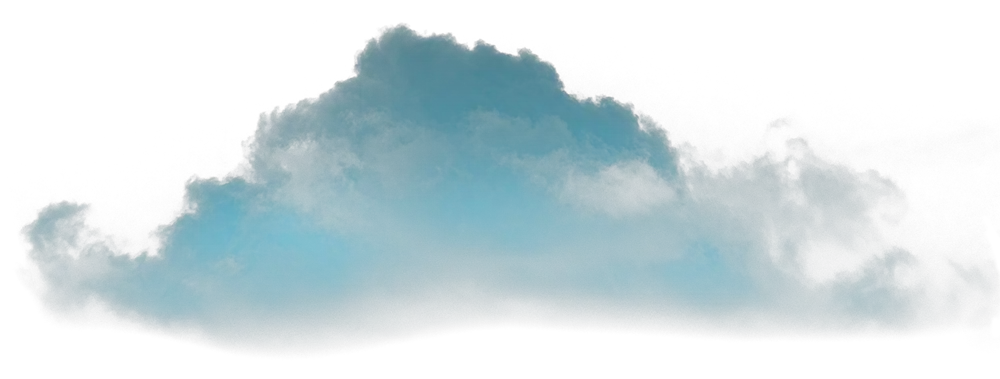

Azeemi foundation
 




O you who believe, the fasts have been enjoined upon you as they were enjoined upon those before you, so that you may be God-fearing Al-Baqarah (2:183)

Narrated Abu Huraira: The Prophet said, “Whoever does not give up forged speech and evil actions, Allah is not in need of his leaving his food and drink (i.e. Allah will not accept his fasting.)” Sahih Bukhari

When someone has a determination, he gets help from Allah Subhana-o-Taala and achieves his destiny.
Never let the doubt in. No one with doubt in his heart can be a Sufi. Doubt is the biggest weapon of Satan through which he is able to create distance between God and you.